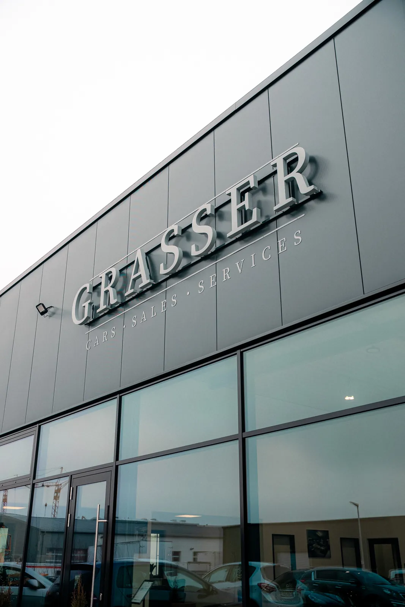
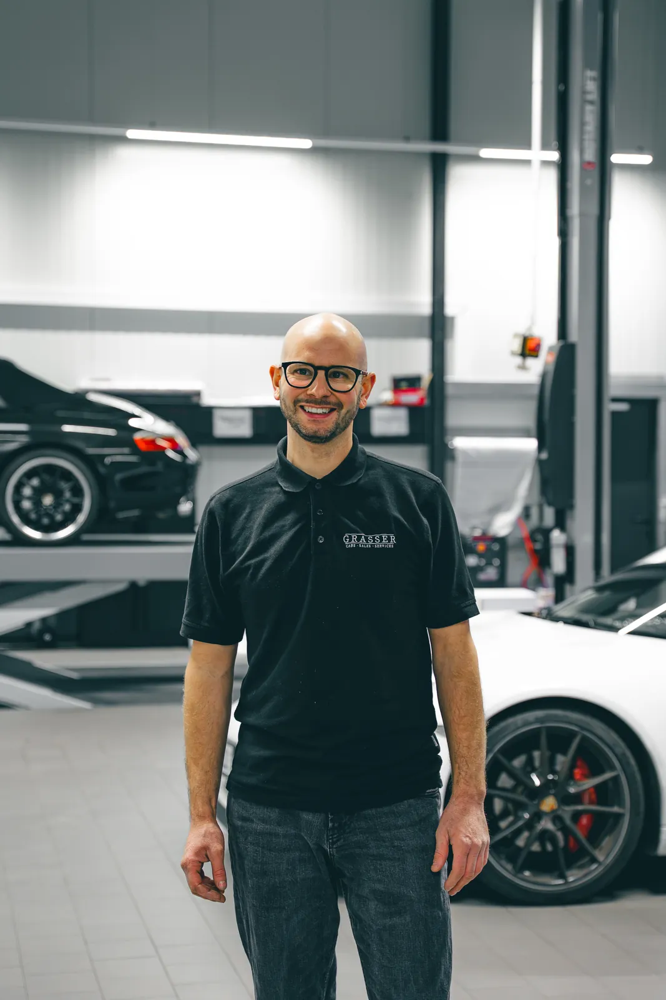
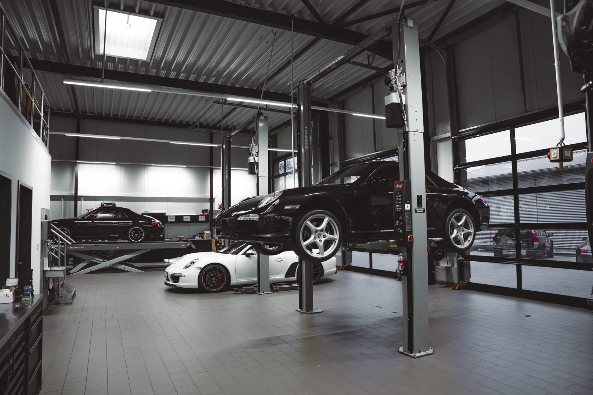

Werkstatt
Wartung und Reparatur nach Herstellervorgaben für Porsche, Sportwagen aller Art und Old- und Youngtimer. Dazu HU und AU im Haus, Fahrwerksabstimmung und Assistenzsysteme.
Grasser Cars · Sales · Services ist ein Kfz-Meisterbetrieb mit Schwerpunkt Porsche. Was wir verkaufen, kommt aus derselben Halle, in der wir es auch warten.


„Wähle einen Beruf, den du liebst, und du brauchst keinen Tag in deinem Leben mehr zu arbeiten." Wir lieben, was wir tun.
Fabian Grasser führt den Betrieb als Inhaber und Kfz-Meister. Sein Schwerpunkt sind Sportwagen, und unter ihnen vor allem Porsche — vom luftgekühlten Elfer bis zum aktuellen Modell. Das gilt für die Werkstatt genauso wie für den Verkauf.
Mit seinem Team arbeitet er bewusst nicht auf Masse. Lieber weniger Fahrzeuge zur selben Zeit, und jedes richtig. Dazu gehört, dass Kunden vorher wissen, was gemacht wird und was es kostet.
Wer sein Auto in eine Werkstatt gibt, gibt etwas aus der Hand, das ihm etwas bedeutet. Deshalb gelten bei uns ein paar Regeln, unabhängig davon, ob es um einen Radwechsel oder eine Restauration geht.
Vor jeder Reparatur sehen wir uns das Fahrzeug an und nennen den Preis. Keine Arbeit ohne Ihre Freigabe.
Wartung mit der Wartungsliste des Herstellers, dokumentiert im Serviceheft.
Zeigt sich bei der Arbeit etwas Neues, rufen wir an, bevor es teurer wird.
Lieber ein Fahrzeug weniger auf der Bühne als eines, das nicht richtig fertig wird.
Der Name sagt es: Fahrzeuge, Verkauf und Service. Alles an einem Standort in Roßtal, wenige Kilometer westlich von Nürnberg.

Wartung und Reparatur nach Herstellervorgaben für Porsche, Sportwagen aller Art und Old- und Youngtimer. Dazu HU und AU im Haus, Fahrwerksabstimmung und Assistenzsysteme.
Ausgewählte Porsche und Sportwagen aus eigenem Bestand. Was wir anbieten, hatten wir vorher selbst auf der Hebebühne — und was wir nicht verkaufen würden, verkaufen wir auch nicht.
Wir kaufen Porsche und Sportwagen an, nehmen Ihr Fahrzeug beim Kauf in Zahlung und begleiten Sie beim Kauf eines Porsche mit unserer Kaufberatung.
Ob Werkstatttermin, Probefahrt oder einfach ein Blick in den Ausstellungsraum: Wir nehmen uns Zeit. Am besten melden Sie sich vorher kurz an.
Grasser Cars · Sales · ServicesRoßtal liegt westlich von Nürnberg. Zu uns kommen Kundinnen und Kunden aus Nürnberg, Fürth, Zirndorf, Oberasbach, Cadolzburg, Stein, Schwabach und Ansbach.